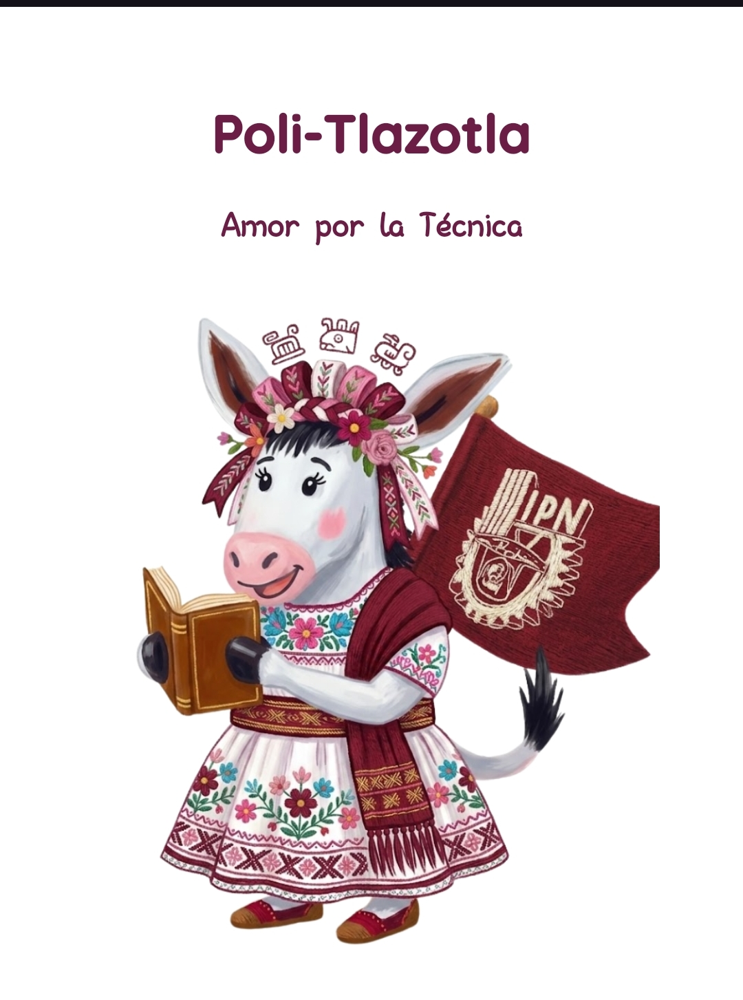
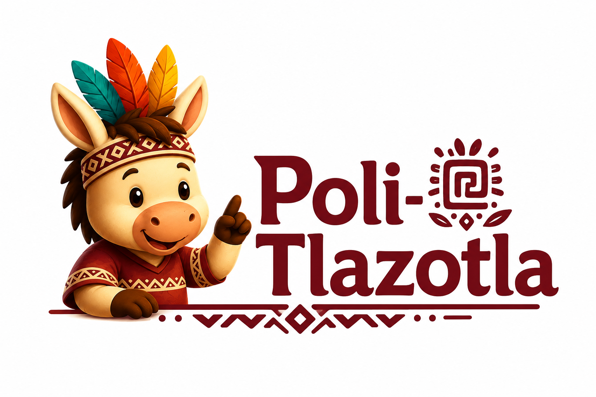
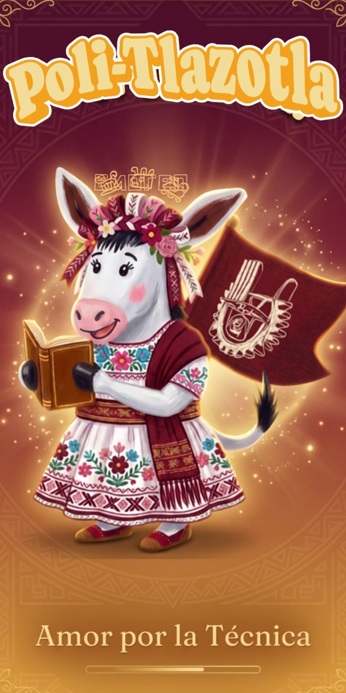
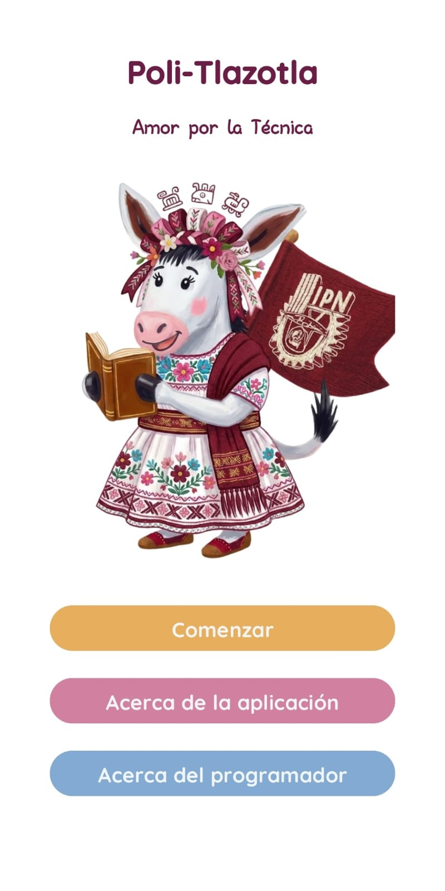
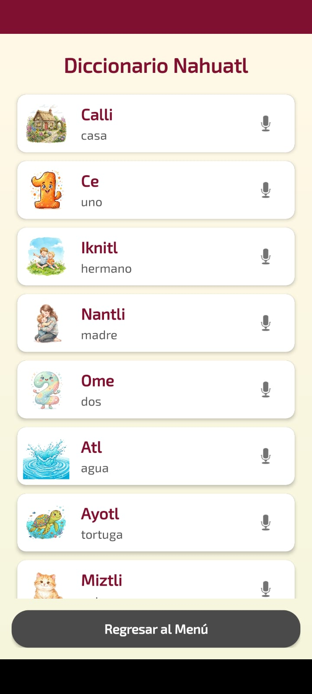
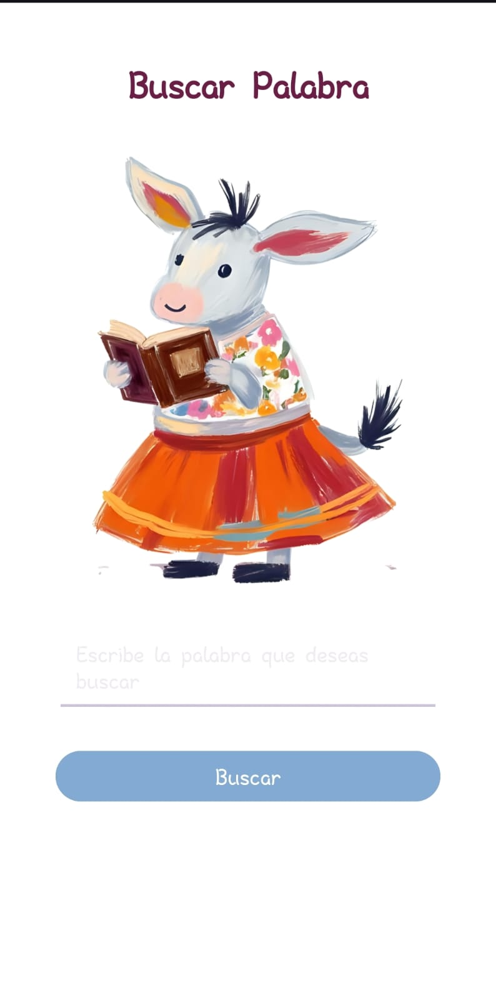
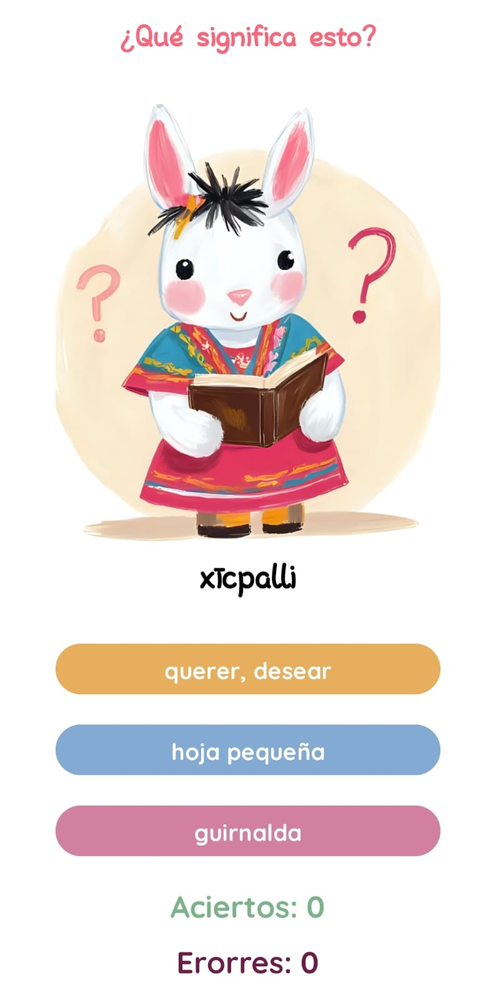
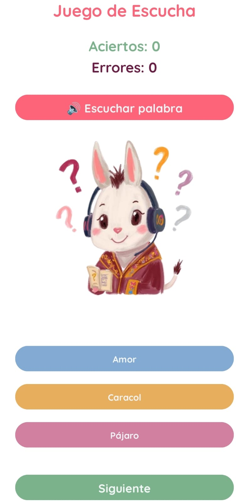
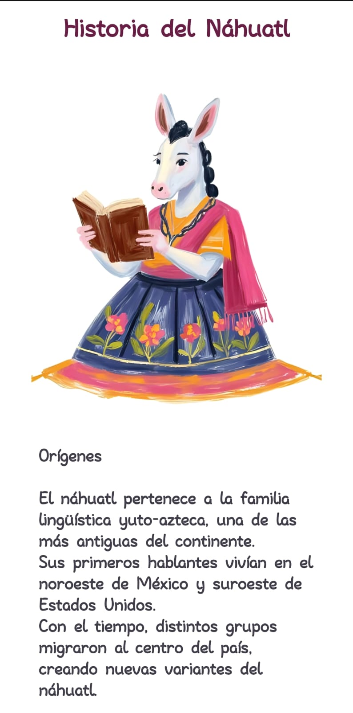

Aprende náhuatl de forma interactiva
Poli-Tlazotla es una aplicación educativa creada para apoyar el aprendizaje de vocabulario básico en náhuatl mediante imágenes, audios y actividades interactivas.


Poli-Tlazotla es una aplicación educativa creada para apoyar el aprendizaje de vocabulario básico en náhuatl mediante imágenes, audios y actividades interactivas.

La segunda versión de Poli-Tlazotla incorpora herramientas auditivas para reforzar el aprendizaje y mejorar la interacción con el vocabulario náhuatl.
Se agregó reproducción de audio en la pantalla de buscar palabra.
Se incorporó un nuevo juego basado en audios para practicar la comprensión auditiva.
La app permite aprender viendo, leyendo y escuchando las palabras.
La nueva versión fortalece la pronunciación y el reconocimiento de palabras.
La aplicación reúne diferentes herramientas para aprender palabras en náhuatl de forma visual, auditiva e interactiva.
Consulta palabras en náhuatl junto con su significado en español e imágenes representativas.
Escucha audios para conocer la pronunciación de las palabras incluidas en la aplicación.
Pon a prueba tus conocimientos seleccionando el significado correcto de palabras en náhuatl.
Escucha la pronunciación de una palabra y selecciona la opción correcta.
Encuentra rápidamente palabras dentro del diccionario y consulta su información.
Conoce información básica sobre el origen e importancia de la lengua náhuatl.
El náhuatl es una de las lenguas indígenas más importantes de México y forma parte de la identidad cultural del país. A través de sus palabras se conservan conocimientos, tradiciones y formas de entender el mundo.
Poli-Tlazotla busca acercar esta lengua a estudiantes y público en general mediante una herramienta tecnológica accesible, visual e interactiva.
Desarrollar una aplicación móvil educativa que permita a los usuarios conocer y aprender vocabulario básico en náhuatl mediante imágenes, pronunciaciones y actividades interactivas, contribuyendo a la preservación y difusión de esta lengua indígena.
Capturas de las pantallas principales de la segunda versión de Poli-Tlazotla.

Pantalla inicial

Menú principal

Diccionario

Buscar palabra

Juego de significado

AudioJuego

Historia de la lengua
Poli-Tlazotla tuvo una primera versión enfocada en el aprendizaje visual y una segunda versión orientada a reforzar la pronunciación mediante audios.
La primera versión incluyó una pantalla inicial con botones de comenzar y acerca de la app. También integró un menú principal con acceso al diccionario, búsqueda de palabras, juego de significados e historia de la lengua náhuatl.
La segunda versión agregó audios de pronunciación en la pantalla de búsqueda de palabras y una nueva pantalla de juego con audios llamada AudioJuego, permitiendo reforzar el aprendizaje auditivo del vocabulario náhuatl.
Descarga la aplicación Poli-Tlazotla y comienza a aprender vocabulario básico en náhuatl mediante imágenes, pronunciaciones y actividades interactivas.